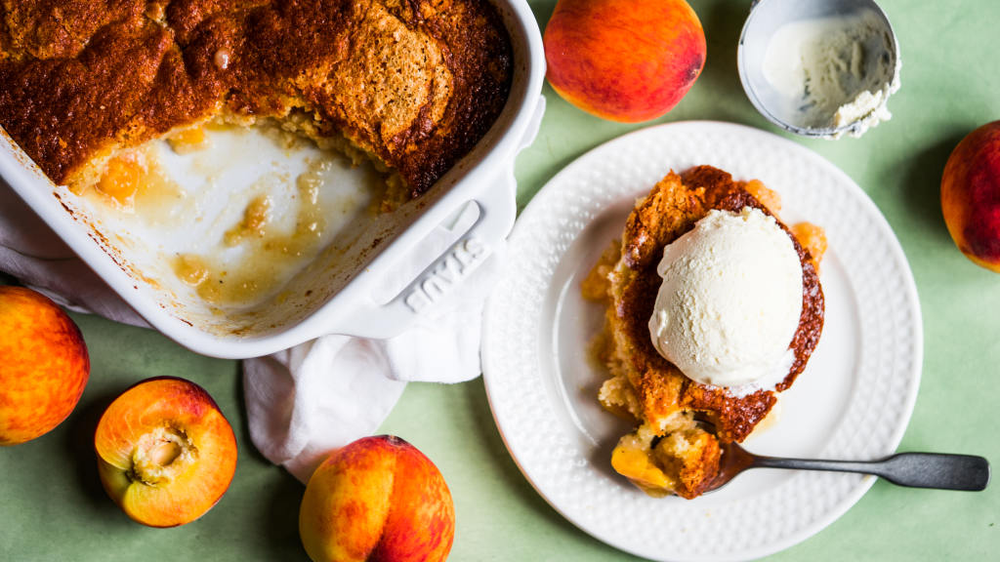

Peach Cobbler

Otherwise known as "summer's favorite dessert."
A delicious dessert with fresh peaches as the base, snuggled under cakey, buttery goodness.
Ingredients
Batter
- 1/2 cup melted butter
- 1 cup flour
- 1 cup sugar
- 2 teaspoons baking powder
- 1/4 teaspoon salt
- 2/3 cup room temperature milk
- 1 room temperature egg
Filling
- 28 ounces of sliced peaches
- 1 cup sugar
- 1 teaspoon cinnamon
- 1/2 teaspoon nutmeg
Steps
- Melt butter in a 9 x 13 inch pan.
- Mix together flour, sugar, baking powder, and salt.
- Stir in milk and egg.
- Pour evenly over melted butter.
- Combine peaches, sugar, and spices and spread over the batter. DO NOT STIR!
- Bake 35-45 minutes at 350°F until batter comes to the top and is golden brown.
- Serve warm with ice cream.